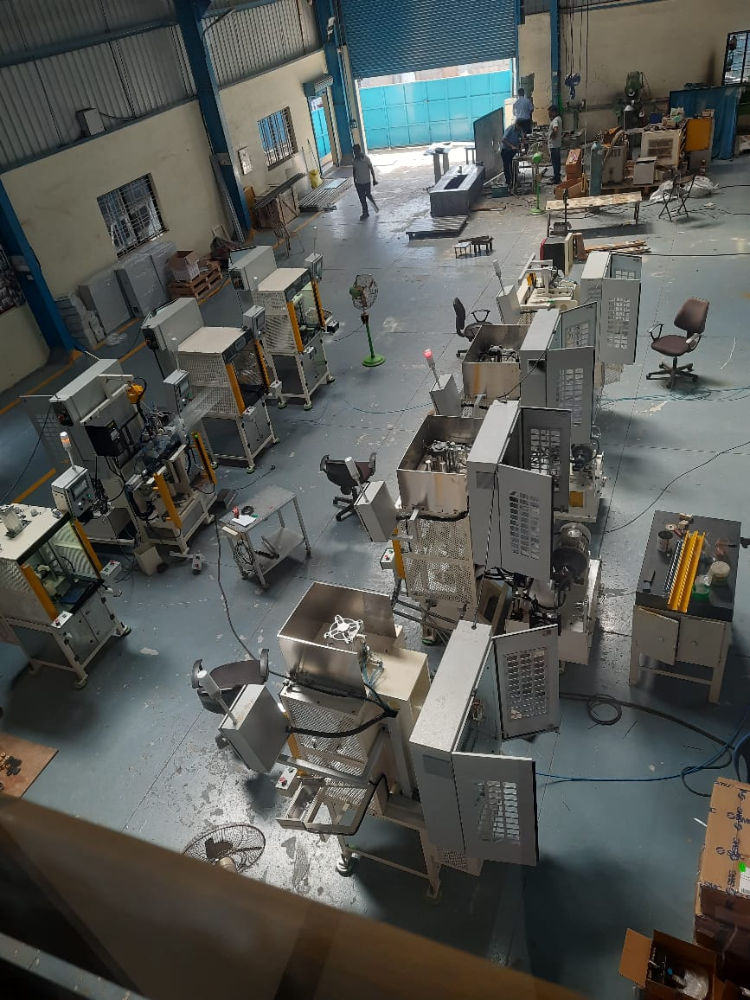
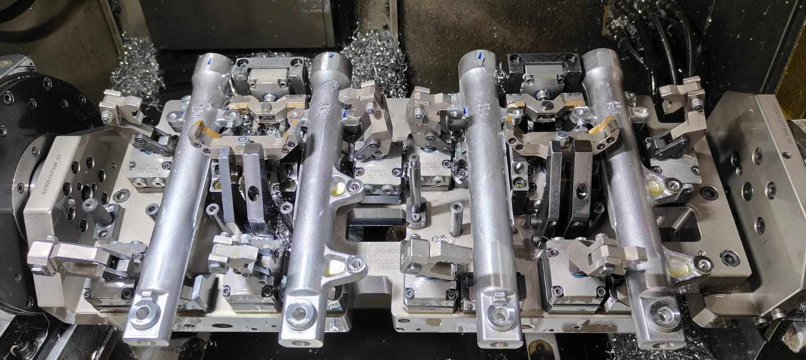
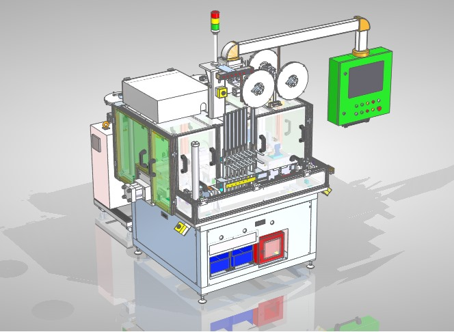
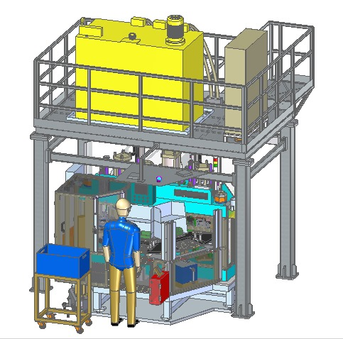

Objective: Enhance the ergonomics, precision, and efficiency of traditional
caulking tools.
Focus Areas: Tool design upgrades, fixture improvement, and user-friendly
features for industrial and consumer use.
...
Key Improvements
Ergonomic Redesign:
Implemented soft, non-slip component guide for reduced hand fatigue.
Adjusted tool angle for better wrist positioning during extended use.
Automatic Pressure Control:
Developed a pressure control system to ensure consistent caulk flow, improving
precision and reducing waste.
Fixture Adjustments:
Created an adjustable fixture guide to ensure accurate caulking lines along
different surfaces and angles.
Challenges Addressed
Hand fatigue and user discomfort during extended caulking.
Inconsistent caulk flow leading to uneven application.
Dripping and leakage causing material waste and cleanup issues.
Outcomes
Improved user experience with enhanced ergonomics and reduced fatigue.
Achieved more consistent and accurate caulking applications.
Increased work efficiency with quicker cartridge changes and reduced material waste.
Tools and Techniques Used
CAD design software for tool and fixture modeling.
Prototyping and user testing for ergonomic validation.
Material analysis for durable and comfortable tool construction.
Assembly Line Setup Project Manager

Project Overview: Assembly Line Setup for 450 cc Inverted Front Fork and Rear Shock Absorber
Objective: Develop and implement a state-of-the-art assembly line for the
production of 450 cc inverted front forks and rear shock absorbers for tourer adventure
motorcycles, focusing on maximizing production efficiency, precision, and ergonomic design.
Focus Areas:
Detailed assembly line design and optimization
Advanced machine selection, procurement, and installation
Custom fixture engineering and workflow refinement
...
Key Improvements
Assembly Line Design and Layout:
Created a linear assembly line layout with dedicated stations for each assembly
phase, including component preparation, assembly, quality control, and packaging.
This configuration reduced material handling and minimized assembly time.
Implemented a U-shaped layout to facilitate smooth operator movement and reduce walk
distances, improving overall workflow efficiency.
Machine Procurement and Installation:
Procured advanced automated machinery, such as servo-controlled torque drivers and
vision-based alignment systems. For example, an automated torque driver was
installed to apply precise torque settings to shock absorber components, ensuring
consistency and reducing manual errors.
Conducted thorough vendor site trials to test machinery, such as a vision system for
component alignment, ensuring it met accuracy requirements before installation.
Managed the installation of equipment, including alignment of automated assembly
stations using laser alignment tools to ensure precise positioning of components.
Custom Fixture Development:
Designed and fabricated custom fixtures, such as a pneumatic clamping system for
holding the inverted front forks during assembly. This system was designed to
accommodate varying component sizes and provide accurate alignment.
Developed an adjustable fixture guide with modular components to support different
assembly angles and ensure precise caulking of shock absorber seals.
Challenges Addressed
Ergonomics and Operator Fatigue: Addressed operator fatigue by designing
workstations with adjustable height tables and ergonomic tools, such as padded grips and
low-force actuators. For example, a workstation was designed with an adjustable height to
accommodate operators of varying statures, reducing strain during extended use.
Precision and Consistency: Overcame issues with component misalignment and
inconsistent assembly by integrating a vision-based alignment system that used cameras to
verify component placement and ensure precise assembly. This system significantly reduced
defects by providing real-time feedback.
Efficiency and Workflow Optimization: Solved production inefficiencies by
implementing automated material handling systems, such as conveyor belts with synchronized
speed control, to streamline the movement of components between assembly stations. This
reduced cycle time and minimized manual handling.
Outcomes
Enhanced Production Efficiency: Achieved a 25% reduction in assembly time
through optimized line layout and automation. For instance, the use of automated torque
drivers cut down manual tightening times by 40%.
Improved Product Quality: Reduced defect rates by 30% through the use of
vision-based alignment systems and custom fixtures that ensured precise component assembly.
For example, the integration of automated alignment checks reduced misaligned parts from 5%
to under 2%.
Operational Improvements: Increased throughput by 20% with the
implementation of a U-shaped assembly layout and automated material handling. The new layout
allowed for faster operator transitions and reduced waiting times.
Tools and Techniques Used
CAD Design Software: Used for creating detailed 3D models of the assembly
line layout and custom fixtures, facilitating accurate planning and visualization.
Laser Alignment Tools: Employed for precise alignment of machinery and
fixtures during installation to ensure optimal performance and accuracy.
Prototyping and User Testing: Conducted iterative testing of custom
fixtures and ergonomic adjustments to validate design improvements before full-scale
implementation.
Material Analysis: Selected high-strength, wear-resistant materials for
fixtures and tooling, ensuring durability and long-term reliability under production
conditions.
New Product Production: Tooling and Fixture Design and Validation

Project Overview: Engineering and Validation of Tooling and Fixtures for Aluminum Die Castings
Objective: Engineer and validate specialized tooling and fixtures for the
precise machining of aluminum die castings used in the outer tubes of motorcycle front forks.
The objective was to optimize machining accuracy, enhance production efficiency, and ensure
superior component quality.
Focus Areas:
Precision tooling and fixture design
Process validation and optimization
Integration into high-efficiency manufacturing workflows
...
Key Improvements
Tooling Design and Development:
Engineered custom cutting tools specifically tailored for machining aluminum die
castings, including high-performance carbide end mills and precision reamers with
brazed carbide tips to minimize tool wear and extend service life.
Implemented toolpath optimization strategies, such as adaptive clearing and
high-speed machining techniques, to improve material removal rates and reduce cycle
times.
Fixture Engineering:
Developed precision fixtures with hydraulic and pneumatic clamping mechanisms to
securely hold die castings during machining. For example, designed a dynamic,
modular fixture system featuring automated alignment pins and zero-point clamping
for rapid setup and consistent positioning.
Integrated advanced locating features, such as precision dowel pins and custom
vacuum chucks, to ensure accurate alignment and repeatability across various
machining operations.
Validation and Optimization:
Conducted extensive validation of tooling and fixtures through iterative machining
trials, employing coordinate measuring machines (CMMs) to verify dimensional
accuracy and surface finish. Adjusted tooling parameters, such as cutting speeds and
feed rates, based on real-time data to optimize performance.
Utilized statistical process control (SPC) techniques to monitor machining
consistency and implement corrective actions, resulting in improved process
stability and reduced variability.
Challenges Addressed
Precision and Dimensional Accuracy: Addressed challenges with achieving
tight tolerances on complex geometries by developing fixtures with high-precision alignment
and repeatability features. This ensured dimensional accuracy within ±0.01 mm.
Tool Wear and Efficiency: Mitigated issues related to tool wear and thermal
deformation by selecting advanced cutting tool materials and coatings. Enhanced cooling
strategies, such as through-tool coolant delivery, were employed to manage thermal loads and
improve tool longevity.
Fixture Adaptability: Designed adaptable fixtures with interchangeable
components to handle different die casting variations, reducing setup times and increasing
flexibility in production.
Outcomes
Increased Machining Efficiency: Achieved a 30% improvement in machining
throughput by optimizing toolpaths and integrating high-speed machining techniques,
resulting in a reduction in cycle times from 20 minutes to 16 minutes per component.
Enhanced Component Quality: Reduced dimensional deviations and surface
defects by 25% through the implementation of precision fixtures and advanced tooling.
Improved part-to-part consistency was achieved, reducing rework and scrap rates.
Operational Advancements: Streamlined production processes with the
adoption of automated clamping and alignment systems, resulting in a 20% increase in overall
production capacity and smoother manufacturing operations.
Tools and Techniques Used
CAD Design Software: Employed for detailed 3D modeling and simulation of
tooling and fixtures, enabling precise design and integration into the production process.
High-Performance Cutting Tools: Utilized carbide end mills and precision
reamers with TiAlN coatings to enhance cutting efficiency and tool life.
Coordinate Measuring Machines (CMMs): Used for precise measurement and
validation of machined components, ensuring adherence to stringent quality standards.
Hydraulic and Pneumatic Clamping Systems: Implemented for secure and
accurate fixturing of die castings, featuring automated alignment and quick-change
capabilities.
Orbital Systems (Bombay) Pvt. Ltd.
Jr. Mechanical Design Engineer
Optimizing Caulking Tools: Fixture and Design Upgrades

Arc Chute Assembly SPM Machine Design for Schneider Electric
Objective: Design and develop a Special Purpose Machine (SPM) for the assembly
of arc chutes used in circuit breakers, aimed at enhancing assembly precision, increasing
throughput, and ensuring high-quality standards for Schneider Electric.
Focus Areas:
Custom machine design for arc chute assembly
Automation and integration of assembly processes
Precision and quality control in high-volume production
...
Key Improvements
Machine Design and Development:
Designed a fully automated SPM for the arc chute assembly, incorporating
high-precision robotic arms and conveyor systems to handle delicate components. The
system included custom end-effectors for precise placement and alignment of arc
chute parts.
Engineered a modular assembly platform with interchangeable tooling and fixtures,
allowing for quick changeovers between different arc chute models and sizes. This
modularity increased flexibility and reduced downtime.
Automation and Integration:
Integrated advanced automation technologies, including programmable logic
controllers (PLCs) and vision systems, to enhance the machine's operational
efficiency. Vision systems were used for real-time inspection and alignment
verification of arc chute components, ensuring high assembly accuracy.
Implemented automated material handling systems, such as feeder bowls and
pick-and-place mechanisms, to streamline component feeding and assembly processes.
This automation minimized manual handling and improved assembly speed.
Precision and Quality Control:
Developed precision fixtures and alignment jigs to ensure accurate placement and
assembly of arc chute components. For example, created custom pneumatic clamping
systems and adjustable alignment tools to secure parts with high repeatability and
minimal variation.
Conducted rigorous validation and testing, including performance simulations and
real-world trials, to fine-tune machine parameters and ensure compliance with
Schneider Electric’s quality standards. This included optimizing cycle times and
verifying that the machine met all required dimensional tolerances.
Challenges Addressed
Assembly Precision: Addressed challenges related to the accurate assembly
of complex arc chute components by integrating high-resolution vision systems and feedback
loops. This ensured precise alignment and placement within ±0.05 mm tolerance, critical for
maintaining circuit breaker performance.
Automation Complexity: Managed the complexity of integrating multiple
automated systems by developing a comprehensive control architecture. This included
programming PLCs for synchronized operation and troubleshooting potential integration
issues, resulting in a seamless and reliable assembly process.
Throughput and Efficiency: Enhanced production throughput by designing the
SPM with high-speed conveyors and rapid-changeover tooling. For example, optimized the
conveyor speed and cycle times to achieve a 40% increase in production rate compared to
manual assembly processes.
Outcomes
Increased Production Efficiency: Achieved a 35% reduction in assembly time
per arc chute through the implementation of automated handling and assembly technologies,
resulting in a substantial increase in overall production capacity.
Enhanced Assembly Accuracy: Improved assembly accuracy with a 20% reduction
in component misalignment and defects, as verified by post-assembly inspection and quality
control processes. The high-precision design ensured consistent and reliable performance of
the arc chutes.
Operational Benefits: Streamlined production workflows with reduced manual
intervention and improved automation integration. The SPM contributed to a 25% reduction in
labor costs and operational overhead, enhancing overall manufacturing efficiency.
Tools and Techniques Used
CAD Design Software: Utilized for detailed 3D modeling of the SPM,
including the design of robotic arms, fixtures, and automation components, enabling accurate
design and simulation of the assembly process.
Programmable Logic Controllers (PLCs): Implemented for machine control and
automation, programming PLCs for precise operation and synchronization of the assembly
processes.
Vision Systems: Integrated high-resolution cameras and image processing
algorithms for real-time inspection and alignment of components, ensuring high assembly
accuracy.
Pneumatic Clamping Systems: Employed for secure and precise fixturing of
arc chute components during assembly, using pneumatic actuators to handle and position parts
efficiently.
Assembly Line Setup Project Manager

Special Purpose Piercing and Riveting Machine Design for Ceramic Clutch Pads for Schaeffler's LuK
Product
Objective: Design and develop a Special Purpose Machine (SPM) for the precision
piercing and riveting of ceramic clutch pads, aiming to enhance production efficiency, ensure
high-quality assembly, and meet the rigorous standards set by Schaeffler's LuK product line.
Focus Areas:
Custom machine design for piercing and riveting ceramic clutch pads
Automation of the assembly process
Precision and durability in high-volume production
...
Key Improvements
Machine Design and Development:
Engineered a high-precision SPM specifically for the piercing and riveting of
ceramic clutch pads, incorporating robust hydraulic and pneumatic systems to handle
the high forces required for working with ceramic materials. The machine featured
advanced actuators and custom-designed tooling to ensure precise perforation and
secure riveting.
Developed a modular design with interchangeable tooling to accommodate various
clutch pad sizes and configurations, allowing for quick retooling and minimal
downtime between production runs.
Automation and Integration:
Integrated sophisticated automation technologies, including servo-driven actuators
and programmable logic controllers (PLCs), to control the piercing and riveting
processes. Automated feeders and conveyors were implemented to handle ceramic clutch
pads efficiently, reducing manual handling and increasing throughput.
Utilized vision systems for real-time inspection and quality control of each ceramic
clutch pad. The vision system verified the alignment and integrity of the riveting
process, ensuring that all pads met stringent quality standards before leaving the
production line.
Precision and Quality Control:
Designed precision fixtures and alignment mechanisms to secure ceramic clutch pads
during the piercing and riveting operations. Custom pneumatic and hydraulic clamping
systems were employed to ensure accurate positioning and minimal variation in the
final product.
Conducted extensive testing and validation of the SPM, using advanced measurement
techniques such as laser scanning and coordinate measuring machines (CMMs) to verify
dimensional accuracy and process consistency. Adjusted machine parameters based on
test data to optimize performance and durability.
Challenges Addressed
Material Handling and Precision: Addressed the challenge of handling
brittle ceramic materials by designing specialized fixtures with gentle clamping mechanisms
that prevented damage during processing. Implemented high-precision alignment systems to
ensure exact placement of piercing and riveting tools.
Automation of Complex Processes: Managed the complexity of automating the
piercing and riveting processes by developing a comprehensive control system. Integrated
PLCs and servo drives to precisely control the timing and force of each operation, achieving
consistent results and reducing manual intervention.
Durability and Maintenance: Enhanced the machine’s durability and ease of
maintenance by selecting high-quality materials and components, such as hardened steel for
tooling and wear-resistant coatings. Designed the machine with accessible maintenance points
and modular components to facilitate quick repairs and parts replacement.
Outcomes
Increased Production Efficiency: Achieved a 40% improvement in production
throughput by optimizing the piercing and riveting processes through automation and precise
control. Reduced cycle times per clutch pad, increasing overall production capacity.
Enhanced Product Quality: Improved the quality of ceramic clutch pads with
a 25% reduction in defects, such as misaligned rivets or incomplete piercing, thanks to the
integration of vision systems and precise alignment mechanisms.
Operational Benefits: Streamlined production workflows with the adoption of
automated handling and quality control systems, resulting in a 30% reduction in labor costs
and a significant decrease in manual handling errors.
Tools and Techniques Used
CAD Design Software: Utilized for the detailed 3D modeling of the SPM,
including hydraulic and pneumatic systems, tooling, and fixtures, enabling accurate design
and simulation of the piercing and riveting processes.
Programmable Logic Controllers (PLCs): Implemented for precise control of
the machine’s automation systems, including servo drives and actuators, to manage the timing
and force of piercing and riveting operations.
Vision Systems: Integrated high-resolution cameras and image processing
algorithms for real-time inspection of ceramic clutch pads, ensuring accurate placement and
quality of the riveting process.
Hydraulic and Pneumatic Systems: Employed for high-force operations
required for piercing and riveting, with custom-designed clamping systems to handle and
position brittle ceramic materials securely.
Sukhdhan Automation Pvt. Ltd.
Mechanical Design Engineer
Optimizing Caulking Tools: Fixture and Design Upgrades
Design and Development of Dual Head Drilling Special Purpose Machine
Project Overview: I spearheaded the design and development of an innovative
Dual Head Drilling Special Purpose Machine (SPM) tailored for high-precision drilling tasks. The
goal was to maximize operational efficiency, enhance accuracy, and handle sensitive materials
with care, pushing the boundaries of traditional drilling machines.
...
Key Contributions
Innovative Machine Design:
Dual Head Configuration: Conceived and engineered a cutting-edge
dual head drilling system that operates two drilling heads simultaneously. This
advancement effectively doubled drilling capacity and significantly reduced cycle
times.
Advanced Tooling: Designed custom drill bits optimized for various
materials, incorporating high-performance coatings to manage wear and extend tool
life. The choice of materials and design was crucial for maintaining precision and
durability.
Automation Mastery:
Seamless Integration: Integrated state-of-the-art automation with
servo motors and programmable logic controllers (PLCs). This setup allowed for
precise control over drilling operations, ensuring both heads worked in perfect
harmony.
Smart Alignment: Implemented an advanced vision system for
real-time component alignment and verification, which not only improved accuracy but
also reduced setup times and minimized human error.
Precision and Quality Control:
Custom Fixtures: Engineered bespoke fixtures with sophisticated
clamping mechanisms to secure components during drilling. These fixtures were
designed to ensure minimal movement and maximum precision, addressing challenges
specific to delicate materials.
Rigorous Testing: Conducted comprehensive testing using laser
scanning and coordinate measuring machines (CMMs). These methods were vital for
fine-tuning the machine and ensuring it met stringent quality standards.
Challenges Tackled
Handling Sensitive Materials: Developed innovative clamping systems and
cooling methods to protect delicate materials from damage. These solutions were critical for
maintaining the integrity of the components throughout the drilling process.
Synchronization of Dual Heads: Addressed the technical challenge of
synchronizing two drilling heads by creating precise control algorithms and integrating
feedback mechanisms. This ensured consistent and accurate drilling performance across both
heads.
Maintenance Efficiency: Designed the machine for easy maintenance with
quick-change tooling systems and accessible service points. This approach reduced downtime
and streamlined the replacement and servicing of components.
Project Outcomes
Enhanced Efficiency: Achieved a remarkable increase in production
efficiency by reducing cycle times and doubling output with the dual head configuration.
This improvement translated to a substantial boost in overall productivity.
Superior Accuracy: Elevated the accuracy of drilling operations, resulting
in a significant reduction in defects and rework. The vision system and high-precision
fixtures played a key role in achieving consistent, high-quality results.
Operational Excellence: Streamlined the manufacturing process with advanced
automation and precise control systems, leading to a decrease in labor costs and an increase
in operational reliability.
Technical Tools and Methods
CAD Design Software: Utilized for creating detailed 3D models of the SPM,
which facilitated precise design and simulation of the drilling process.
PLCs and Servo Motors: Employed for controlling the dual head operations
and automating key processes, ensuring synchronized and efficient performance.
Vision Systems: Integrated high-resolution cameras and image processing to
enhance component alignment and accuracy in real-time.
Advanced Clamping Systems: Developed pneumatic and mechanical clamping
solutions to secure and stabilize components, ensuring precision and minimizing movement
during drilling.